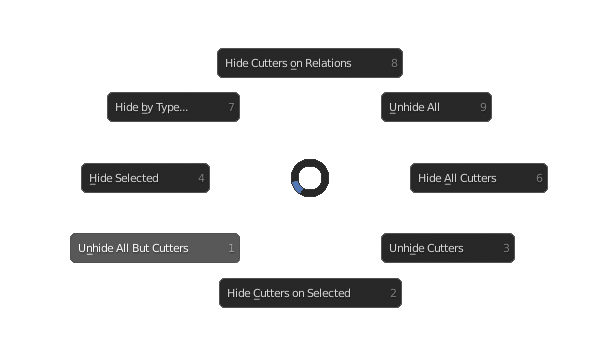

Hide Menu
Hotkey: H
Many of the functions in this menu reference "cutters", a "cutter" object is an object with display mode set to wire. This happens when an object is used to perform boolean operations in Boolean Mode (ND) in the Focus menu.
Functions / Table of Contents
- Hide Cutters on Relations
- Unhide All
- Hide All Cutters
- Unhide Cutters
- Hide Cutters on Selected
- Unhide All But Cutters
- Hide Selected
- Hide by Type...
Hide Cutters on Relations
Hides objects parented to parents and children of selected objects that are displayed as wire.
Unhide All
Reveals all objects in the viewport that were previously hidden.
Also see: Blender Manual
Hide All Cutters
Hides all objects in view layer that are displayed as wire.
Unhide Cutters
Unhides all objects in scene that are displayed as wire.
Hide Cutters on Selected
Hides objects parented to selected objects that are displayed as wire.
Unhide All But Cutters
Unhides all objects in scene except those that are displayed as wire.
Hide Selected
Hides selected object in the viewport, functions exactly the same as the default hide function.
Also see: Blender Manual
Hide by Type...
Switches to the blender collections and object type visibility settings menu. Where individual collections and object types can be hidden.
Also see: Blender Manual